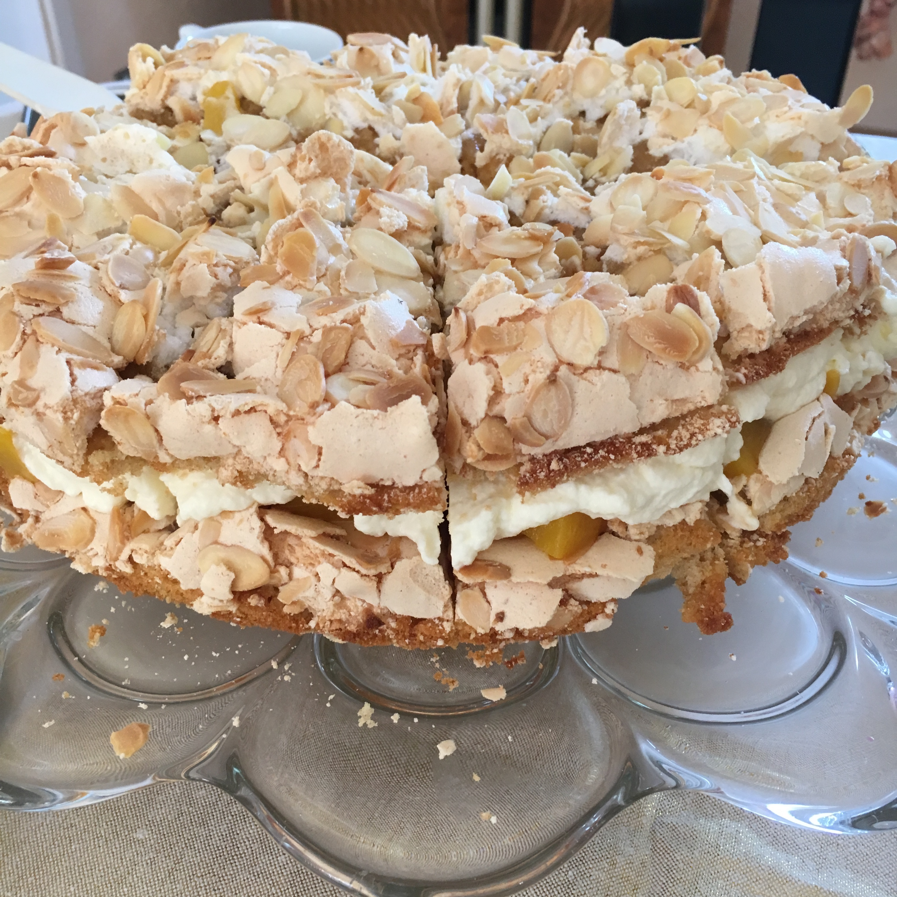

» Backen

Himmelstorte
Zutaten
- 150g Mehl
- 1Pck. Backpulver
- 5 Eier
- 100g Butter
- 300g Zucker
- 1Pck. Vanillezucker
- 150g Mandelblättchen
- 1 Dose Pfirsiche
- 500ml Sahne
- 2Pck. Vanillezucker
Zubereitung
- Den Backofen auf 160 Grad Umluft vorheizen. Mehl und Backpulver mischen und sieben. Eier trennen und Eigelb mit 100g Zucker und Vanillezucker schaumig
schlagen.
- Butter schmilzen und etwas abkühlen lassen, dann unter rühren zu den Eiern dazugeben. Zum Schluss die Mehl-Backpulver-Mischung
unterrühren, bis ein glatter Teig entstanden ist. Den Teig auf zwei Springformen (26cm) aufteilen.
- Eiweiß mit 200g Zucker steig schlagen und auf die beiden Böden verteilen. Dann die Mandelblättchen
darauf verteilen und für 30 min. backen lassen.
- Sahne mit Vanillezucker steif schlagen, Pfirsiche abgießen und in kleine Stücke schneiden.
- Einen der beiden ausgekühlten Böden auf eine Tortenplatte legen, darauf die Pfirsiche verteilen und mit der Sahne bestreichen. Den oberen Boden in 16 Stücke schneiden und alle auf der Torte drapieren.
Social Media
Instagram
mein Impressum